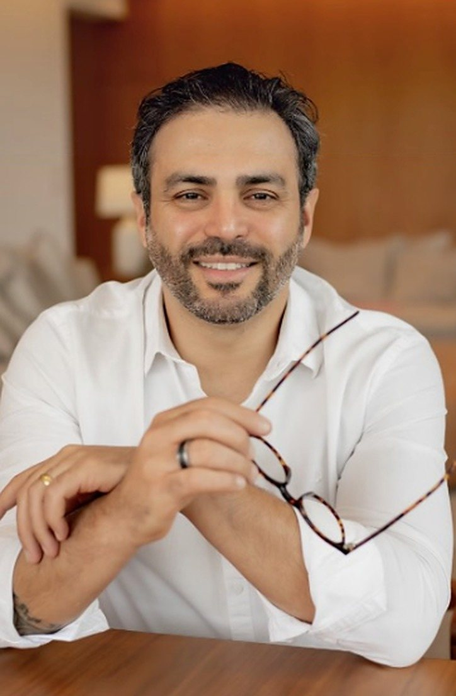

Entre estar cansado e estar doente
Um bate-papo sobre a mente de quem educa
- Cansaço ou doença: como reconhecer o burnout
- Conversas difíceis com alunos, pais e colegas
- Limites, pilares de cuidado e quando pedir ajuda
Palestras sobre saúde mental
Palestras personalizadas para empresas, cooperativas, escolas e campanhas de saúde. Conteúdo com base científica, explicado com clareza e adaptado à realidade de quem vai ouvir, do campo à sala de aula.

Como funciona
O mesmo tema muda de exemplo, de ritmo e de linguagem conforme o público. Para produtores rurais, a safra e a cooperativa; para professores, a sala de aula e a conversa difícil com os pais.
Entendemos o público, o momento da instituição e o que se espera do encontro.
Tema, exemplos e duração ajustados. Em geral, de 35 a 45 minutos de fala, com tempo para perguntas.
Em auditórios, escolas, assembleias e encontros, ou por videoconferência.
Quando o tema pede, material de apoio por QR code, como o e-book gratuito feito para os educadores, e os contatos de ajuda: CVV 188 e SAMU 192.
Portfólio
Todos os temas podem ser combinados ou adaptados ao seu evento.
Um bate-papo sobre a mente de quem educa
Saúde mental masculina
Saúde mental da mulher
Para cooperativas, cooperados e lideranças
Por que sentimos o que sentimos
Evitação, alívio rápido e coragem
Limites, riscos psicossociais e a nova NR-1
O que é, como se forma e quando adoece
No rádio
Um programa de conversa sobre saúde mental na 93 FM de Sombrio, com a apresentadora Marivânia. Temas do dia a dia explicados com base científica e em linguagem de quem escuta.
Para quem
SIPAT, lideranças e equipes, com atenção aos riscos psicossociais da NR-1.
Assembleias, encontros de produtores e programas para cooperados.
Formações para professores e equipes de educação, com material de apoio.
Janeiro Branco, Setembro Amarelo, Outubro Rosa e Novembro Azul.
Contrate sua palestra
Conte o que você precisa. A mensagem abre pronta no WhatsApp do consultório, (48) 99209-2831, e respondemos com disponibilidade e proposta.
Você também pode falar diretamente pelo número (48) 99209-2831.